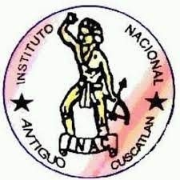

Instituto Nacional de Antiguo Cuscatlán

Docente:Andrea estrada
Grado:3° Desarrollo de software
Sección:"A"
Módulo 3.1: "Desarrollo de aplicaciones de software para la solución de problemas"
Integrantes:
Victor javier molina vargas
Justin kenneth pérez roque
Tatiana fabiola gonzález santos
José alejandro orellana cañas
Alberto ernesto gil marroquin